Creating, Importing and Collaborating on Notebooks
In this section, you will learn how to create, import, and share notebooks by using a Git repository.
The RHODS workbench images add the Git extension to JupyterLab. This extension adds graphical controls to interact with Git repositories via the JuypterLab interface.
|
Alternatively, you can manage your repositories by using the However, bear in mind that the Git extension integrates in the JuypterLab user interface, which can improve the efficiency of your workflow. The Git extension might be also suitable for users who are not familiar with the syntax of Git commands. After all, RHODS offers two Git interfaces at your disposal, and you do not need to choose one or the other. In most cases, it is beneficial to integrate both options into your workflow and use the one that better adjusts to your preferences at each moment. |
Collaborating with Git
Version control systems, and in particular, Git, foster collaboration in the following ways:
-
Multiple users can work on the same code base at the same time.
-
Users can work in features or fixes by using branches, to reduce conflicts with the main development branch.
-
Users can propose, review, and discuss changes by using pull requests.
The collaboration and collective experience of developers, companies, and open sources communities has resulted in sets of good practices and rules called Git workflows. These workflows define how teams should work together and coordinate by using Git features, such as branches and pull requests. Some of these workflows are:
Exercise: Creating a Notebook
-
In a new or an existing RHODS data science project, create a
Minimal Pythonworkbench. -
Open the JupyterLab interface of the notebook.
-
Press Ctrl+Shift+L to open a new launcher.
-
In the Notebook section, click Python 3.9.
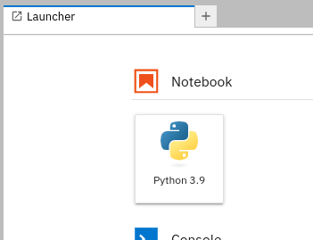JuypterLab creates a new
Untitled.ipynbnotebook file. -
Press Ctrl+S to save the notebook. Enter a name for the notebook and click Rename.
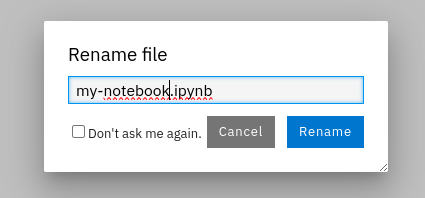You have now created your first notebook.
Before creating a notebook, verify that your are at the directory where you wish to create the notebook file. Use the JupyterLab file browser to navigate to the right directory.
Exercise: Importing a Notebook from Git
-
In the same JupyterLab window, click the Git icon.
-
Click Clone a repository.
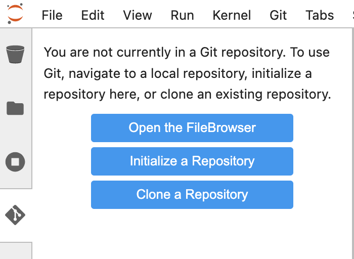 -
Enter https://github.com/RedHatQuickCourses/rhods-qc-apps as the repository, and click Clone.
-
Navigate to any of the subdirectories of
rhods-qc-appsand double click a notebook file to open it.
Exercise: Creating a Notebook in a Git Repository
-
Create a public GitHub repository with your GitHub account. Refer to https://docs.github.com/en/get-started/quickstart/create-a-repo if you need help with this step.
-
Return to the JupyterLab window that you have used in the previous exercise. Click the Git icon.
-
Click Clone a repository.
-
Enter the URL of your Git repository and click Clone.
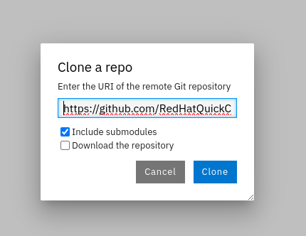 -
In the file browser, navigate to the repository directory.
-
In this directory, create a notebook file called
hello.ipynb. You can follow the steps given in the first exercise of this page. -
Add the following code in the first cell:
print("Hello world") -
Press Ctrl+Enter to execute the cell. Your notebook should display as follows:
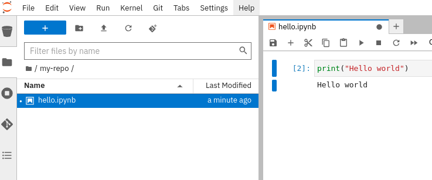 -
Press Ctrl+S to save the notebook. Alternatively, you can click .
-
Click the Git tab in the side bar. Git displays the newly added file:
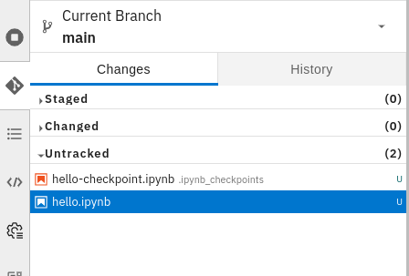 -
Stage the
hello.ipynbfile. Right click the file and click Track.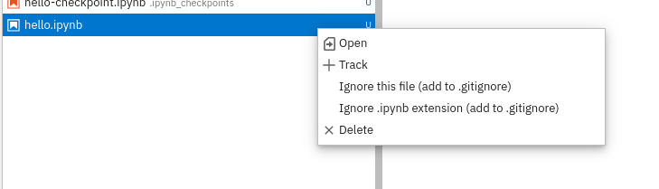The file is now staged.
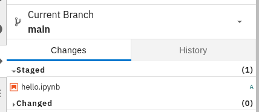 -
Enter the commit message and the description at the bottom, and click Commit.
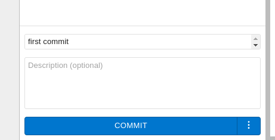At this point, JupyterLab prompts for the committer information. Enter your name and email.
You can also use a Git SSH key for authenticating, as explained in the GitHub Docs. To inject the key into the workbench you have several options, which are out of the scope of this section:
-
Create a specific SSH key for your workbench and add to GitHub.
-
Upload your local SSH key into the workbench.
-
Create a kubernetes Secret with the SSH key, and mount the Secret in your workbench. You might require support from the cluster administrator for this option.
-
-
Push your changes to GitHub. Click the up arrow cloud icon at the top.
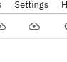At this point, JupyterLab requires you to authenticate into GitHub. Enter your GitHub username and token.
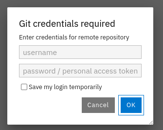 -
Return to GitHub and verify that your repository contains the
hello.ipynbfile. Notice that GitHub can render the notebook in view-only mode.
Pulling Changes
To work with the latest version of the code, you should regularly pull changes from the remote repository. To pull changes from a remote repository, you can use the down arrow cloud icon.
If you have uncommitted changes in your workbench, then you might see a message indicating that your changes forbid pulling the changes, as follows:
To solve this problem, commit your changes in the workbench before pulling.
After you have committed your changes in the workbench, you might still find problems. For example, if the remote and the local branches have diverged, then you must configure the git strategy to reconcile the branches. Open a terminal and run the following command to configure Git to merge branches:
git config pull.rebase false
Finally, you might occasionally find conflicts if multiple contributors are working on the same branch. In that case, JupyterLab opens the diff view, which allows you to view the differences and solve the conflicts.
After you have solved the conflicts, click the Mark as resolved button at the top right.